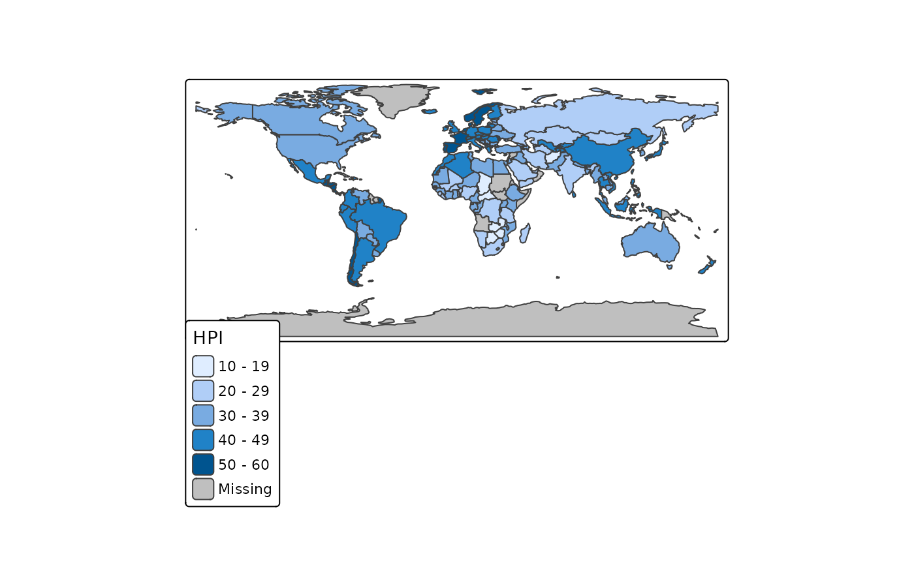
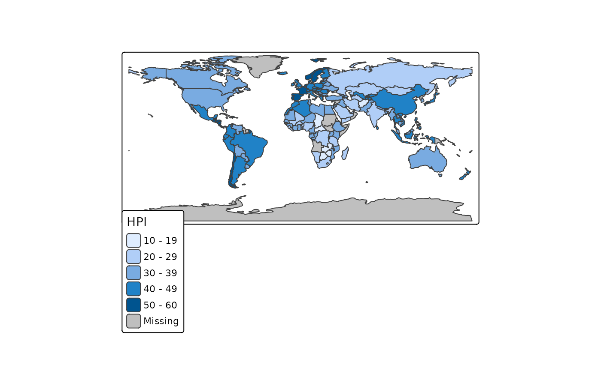

tmap_mode()informs of the current mode (if called without argument).ttm()toggles between the most recent two modes.ttmp()same asttm()and callstmap_last()to display the last map in the new mode.rtm()rotate between between all modesrtmp()same asrtm()and callstmap_last()to display the last map in the new mode.
Set tmap mode to static plotting or interactive viewing.
The global option tmap.mode determines the whether thematic maps are plot
in the graphics device, or shown as an interactive leaflet map (see also tmap_options().
The function tmap_mode() is a wrapper to set this global option.
The convenient function ttm(), which stands for toggle thematic map,
is a toggle switch between the two modes. The function ttmp() stands for
toggle thematic map and print last map: it does the same as ttm() followed
by tmap_last(); in order words, it shows the last map in the other mode.
It is recommended to use tmap_mode() in scripts and ttm()/ttmp() in the console.
Value
tmap_mode()returns the current tmap mode invisibly (when called without argument). Otherwise, returns the previous mode.ttm()switches mode and returns previous tmap mode invisibly. The previous tmap mode before switching.
mode = "plot"
Thematic maps are shown in the graphics device.
This is the default mode, and supports all tmap's features,
such as small multiples (see tm_facets()) and extensive layout settings (see tm_layout()).
It is recommended to use tmap_save() for saving static maps.
mode = "view"
Thematic maps are viewed interactively in the web browser or RStudio's Viewer pane.
Maps are fully interactive with tiles from OpenStreetMap or other map providers
(see tm_tiles()). See also tm_view() for options related to the "view" mode.
This mode generates a leaflet::leaflet() widget, which can also be directly
obtained with tmap_leaflet().
With R Markdown, it is possible to publish it to an HTML page.
However, there are a couple of constraints in comparison to "plot":
References
Tennekes, M., 2018, tmap: Thematic Maps in R, Journal of Statistical Software, 84(6), 1-39, doi:10.18637/jss.v084.i06
See also
tmap_last()to show the last maptm_view()for viewing optionstmap_leaflet()for obtaining a leaflet widgettmap_options()for tmap options
Examples
current.mode = tmap_mode()
#> ℹ Current tmap mode is "plot".
#> ℹ Call `tmap::ttm()` to switch to mode "view".
tmap_mode("plot")
#> ℹ tmap mode set to "plot".
tm_shape(World) + tm_polygons("HPI")
 tmap_mode("view")
#> ℹ tmap mode set to "view".
tm_shape(World) + tm_polygons("HPI")
ttm()
#> ℹ tmap mode set to "plot".
#> ℹ switch back to "view" mode with `tmap::ttm()`
tm_shape(World) + tm_polygons("HPI")

tmap_mode(current.mode)
#> ℹ tmap mode set to "plot".
tmap_mode("view")
#> ℹ tmap mode set to "view".
tm_shape(World) + tm_polygons("HPI")
ttm()
#> ℹ tmap mode set to "plot".
#> ℹ switch back to "view" mode with `tmap::ttm()`
tm_shape(World) + tm_polygons("HPI")

tmap_mode(current.mode)
#> ℹ tmap mode set to "plot".